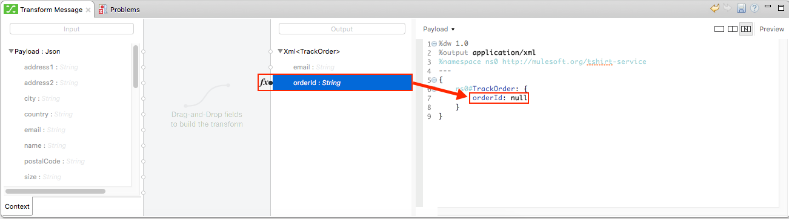
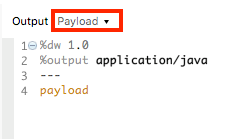
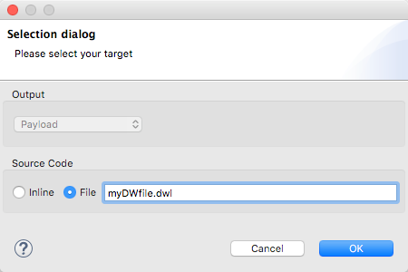

Using DataWeave in Studio
Enterprise
DataWeave is Mule’s most powerful and versatile tool for transforming data. The Transform Message component carries out a transformation of your Mule message that follows a transform script, this transform script can be explicitly written in DataWeave code or you can use the UI to build it implicitly through dragging and dropping elements. DataWeave fully supports DataSense, allowing you to leverage metadata from connectors, schemas and sample documents to more easily design your transformations. DataSense provides content assist while you are coding and scaffolds and auto generates lines of code form actions performed in the UI. The Transform Message component offers you a preview of your output that is built on sample data and is updated in real time as you make changes to your transform, so that you can be sure of what you’ll be getting out of the other end.
|
If you have projects that are built with the deprecated DataMapper, a migration tool is now included in Studio, which assists in converting a DataMapper map into DataWeave: Right click on a DataMapper, select Migrate to DataWeave, and follow the instructions. 
|
Using the DataWeave Transformer
In Anypoint Studio, place a Transform Message element in a flow to create transforms using the DataWeave language. The editor helps you do this by offering a drag and drop UI, intelligent autocomplete suggestions, and an output preview that is updated in real time as you make changes. This generates a .dwl transformation file (or several of them) that stores your code and is packaged with your Mule application.
When adding a Transform Message element to a Mule Flow, it takes the elements from the incoming Mule Message as its inputs. It then performs the necessary actions to produce a Mule message as output for the next element in the flow.
If you click on an instance of the Transform Message element in your flow, its properties editor will be displayed:
Note that by default the properties editor of the Transform Message element displays two main regions:
-
On the left: is the graphical UI, which exposes the input and output structures. The mappings between input and output fields are represented through lines drawn from one side to the other. You can easily click and drag one field onto another to map these.
-
On the right: the DataWeave code editor. This allows you to leverage the full power of DataWeave syntax, which includes many tools that allow you to aggregate, normalize, group, join, partition, pivot and filter. See the DataWeave reference documentation for a complete guide on the DataWeave language syntax.
Both regions represent the same transform in different ways, and any changes done to one representation are matched in real time by the other one.
| When creating a new transformation, it’s a lot easier if you first add and configure any other elements on your flow that expose metadata. In this way, this metadata that other message processors expose to Studio is displayed in the input and output structures, which you can use to build out the DataWeave code through the UI. |
The DataWeave Text Editor UI
In this section, you write the actual DataWeave code that carries out the transform. Sometimes, all you need to do can be automatically built by dragging elements in the GUI, other times you may want to carry out more complex operations that involve aggregation, filtering, calculations, defining custom functions, etc and there you must write this out in DataWeave code.
Directives in Studio
Although DataWeave as a language supports adding input directives and naming these by any name you like, when using DataWeave in Anypoint Studio, it’s not necessary to declare any input directives for any of the components of the Mule Message that arrives to the DataWeave transformer (Payload, flow variables and input/outbound properties) nor for any system variables. These are already implicitly recognized as inputs and can be referenced anywhere in the DataWeave body without a need to include them in the header, their type is known from Mule metadata.
If your transform outputs XML data, a namespace directive will be automatically added to your DataWeave header section, defining a default name for it. This namespace is then referenced in the body too.
%dw 1.0 %output application/xml %namespace ns0 http://mulesoft.org/tshirt-service
For further reference about writing DataWeave code, see DataWeave Language Reference
The Graphical UI
Two tree views show the known metadata contents of the incoming and the outgoing Mule Messages, allowing you to explore them and know what data is available for using as an input and where it can fit into, and how to reference each of these parts.
You can simplify or hide the graphical UI if you wish by clicking the icons on the top right to select between the different views for this properties editor:
By simple interactions with the graphical UI, you can intuitively build out much of your DataWeave code, often this is all you really need to do.
-
Drag an element on the input structure over to another on the output structure. This will cast a line that joins them and also add a line to the DataWeave code that describes this mapping.
-
Double click on an output field to add it into the DataWeave code with a static value. This will add an
Fxicon next to it, as well as a line to the DataWeave code that assigns a default null value to the field. You can then change this value in the code to whatever you want. -
Select an element to have its corresponding line in the DataWeave code hightlighted. This is very helpful when dealing with large transforms.
-
If an input field is mapped to two or more output fields, you can right-click it and then select which of the multiple outputs you want to highlight in the DataWeave code.
-
Type a name in the search boxes at the top of the input and output structures to display only fields that match your search. This is particularly useful when dealing with large data structures with many nested elements.
Defining Input Structure
If the other elements in your Mule flow expose metadata about their input and output, then this information will already be available to the Transform Message component. If they don’t, you can configure these elements so that they expose this information by editing their Metadata tab. For example, you can configure an HTTP connector and assign it a JSON sample file so that this sample’s structure is exposed as metadata that your Transform Message component can read.
If the Mule flow doesn’t expose Metadata about the elements you need from the incoming message, you can also manually specify it directly in the input section of your Tranform Message component. If a metadata definition is missing, a notification will advise you to provide one, otherwise you can also right-click your input and select Set Metadata.
You can select an existing metadata type, this may save you several steps:
Or you can also build your metadata freely using an editor:
This sample data is used together with your DataWeave code to produce a sample output in the output section, which gets updated in real time as you make changes.
You can then define the data structure manually by writing or pasting a sample into the newly created tab.
You can also click the rescafold button to have your sample data overwritten by an empty scaffolding structure based on the metadata.
When the input is of JSON or XML types, the sample input contains plain XML or JSON code. When the input is of type POJO or DataWeave, the sample input is written in DataWeave for more simplicity. In these cases the sample DataWeave code is merely a way to display the sample data, not a transformation in itself.
If your metadata is missing any variables, inbound properties, outbound properties, session variables or record variables that you know will exist in the incoming mule message, you can manually add these too in the editor. Just right-click on one of these categories in the input section of the properties editor and select Add Flow Variable, Add Inbound Property or whatever the element you want to add may be.
Explicitly Defining a MIME Type
By default, DataWeave should be able to recognize the type of an input from the metadata. If you must explicitly define an input payload type, use the mimeType attribute in an XML tag as in the example below:
<dw:transform-message doc:name="Transform Message">
<dw:input-payload mimeType="text/json" />
<dw:set-payload>
<![CDATA[%dw 1.0
%output application/java
---
{
// YOUR DW SCRIPT
}
]]>
</dw:set-payload>
</dw:transform-message>If you do not provide this attribute, DataWeave will try to read the payload MIME type from the metadata. If it is undeclared or not understood it will default to 'application/java', a warning will be logged.
Configuring the CSV Reader
Some input formats, like CSV, allow you to define a reader with specific properties that make DataWeave parse inputs differently.
You can assign any special character as the indicator for separating fields, toggling quotes, or escaping quotes. Make sure you know what special characters are being used in your input, so that DataWeave can interpret it correctly.
When defining an input of type CSV, there are a few optional parameters you can add to the input directive to customize how the data will be parsed.
-
header: boolean that defines if the first line in the data contains headers -
separator: character that separates fields,','by default -
quote: character that defines quoted text," "by default -
escape: character that escapes quotes,/by default
|
When When |
You can set these propertes by either editing the XML code or via the UI:
Studio Visual Editor
In Anypoint Studio, there are two ways to set this up. You can either set the parameters of the CSV input through the Transform Message component itself or by setting it up on the component of your Mule flow that actually brings this information in.
On the Transform Message component, left-click on the element in the input structure and select Reader Configuration.
+ image::dw-reader-configuration.png[reader]
This option won’t be available if the type of the input doesn’t allow for this kind of configuration. If the payload is of type unknown, you must change its type first. Do this by configuring the elements that come prior to your Transform Data element in the flow, for example configuring an HTTP Listener Connector’s Metadata tab so that it explicitly declares that it outputs CSV data.
|
On the component that brings the input into the flow (eg: an HTTP Connector, FTP Connector, etc), select it, pick the Metadata tab, and click Add Metadata to provide the details about the incoming data structure.
XML Editor
In the XML editor, if you want to parse CSV inputs with custom modifiers, you must set these up as child elements of the DataWeave component, like in the example below:
<dw:input-payload doc:sample="list_csv.csv" mimeType="text/csv" >
<dw:reader-property name="separator" value="|"/>
<dw:reader-property name="header" value="false"/>
</dw:input-payload> <dw:transform-message metadata:id="33a08359-5085-47d3-aa5f-c7dd98bb9c61"
doc:name="Transform Message">
<dw:input-payload>
<!-- Boolean that defines if the first line in the data contains headers -->
<dw:reader-property name="header" value="false" />
<!-- Character that separates fields, `','` by default -->
<dw:reader-property name="separator" value="," />
<!-- Character that defines quoted text, `" "` by default -->
<dw:reader-property name="quote" value=""" />
<!-- Character that escapes quotes, `\` by default -->
<dw:reader-property name="escape" value="\" />
</dw:input-payload>
<dw:set-payload>
<![CDATA[
%dw 1.0
%output application/java
---
// Your transformation script goes here
]]>
</dw:set-payload>
</dw:transform-message>| CSV inputs with multiple lines in their headers are not supported by DataWeave |
The Preview Section
You can enable the preview section by clicking on the Preview button on the top-right of the editor.
This section presents a sample output, built by taking the sample input you provide and transforming it through the DataWeave transform. As you make changes in the DataWeave code, notice how the output data structure changes. If your transformer has multiple outputs, the Preview section will display the one corresponding to the currently selected transform.
Viewing Errors
For your DataWeave code’s syntax to be evaluated, you must have the Preview Section enabled. With this enabled, any syntax errors are marked. Above your DataWeave code, an additional error notification can be opened to display further detail.
If you click this notification, a window opens detailing each error in your code and its cause.
Handling Multiple Outputs
A single Transform Message element can give shape to several different components of the output Mule message. Each of these output components must be defined in a separate .dwl file, written out in a separate tab of the Transform section. For example in one tab you may be defining the payload contents, in another those of an outbound property, and these will both be parts of the same output Mule message.
To add a new output, open the dropdown menu above your DataWeave code, that should say Payload by default.
Then select Add New Target.
Then you must specify where in the output Mule message to place the output of this new DataWeave transform. In case you’re creating a new variable or property, you must also set a name for it.
In Studio’s XML editor you can do the same by adding multiple child elements inside the dw:transform-message component.
<dw:transform-message>
<dw:set-payload resource="classpath:path/transform.dwl"/>
<dw:set-variable variableName="myVariable" resource="classpath:path/transform.dwl"/>
<dw:set-session-variable variableName="mySessionVariable" resource="classpath:path/transform.dwl"/>
</dw:transform-message>Keeping your DataWeave code in a separate file
By default, DataWeave code is expressed inline within your Mule XML file. If you wish to keep it in a separate file and have your XML reference this file, you can easily do this from the DataWeave UI. In order to export the DataWeave code to a .dwl file, you need to do the following:
-
Click on the dropdown menu above the DataWeave code that defines the output, which should say 'Payload' by default
 -
Select 'Edit current target'
-
Select the 'File' radio button
 -
Type a name for your
.dwlfile -
Click OK
A file will be created under the 'src/main/resources' folder in your project containing your DataWeave code.
Using DataWeave Language Elsewhere
All components in Mule that support Mule Expression Language also support expressions written in DataWeave Language. To invoke an expression written in DataWeave language, simply invoke the dw() function, the expression will return whatever the transform outputs.
DataWeave expressions defined within this function work just as those defined within a Transform Message element, the only difference is that the output is returned into the expression’s result, wherever it may be.
| The DataWeave expression that you write in this function must be enclosed in "quotation marks" |
For example, you can define a custom object and populate it with elements from the payload:
dw("myobject:{id:payload.accountid, user:payload.user}")
That same expression could be added inside a Logger, within a MEL expression, to print out its result:
#[dw("myobject:{id:payload.accountid, user:payload.user}")]
Calling Global MEL Functions from DataWeave Code
If you define a global Mule Expression Language (MEL) function in your Mule project, you can then invoke it anywhere in your DataWeave code, without need for any special syntax.
To create one such global function, you must edit your Mule project’s XML file and enclose any functions that you wish to define in the following set of tags, which must be placed in the global elements section, before any of the flows are defined.
<configuration doc:name="Configuration">
<expression-language>
<global-functions>
</global-functions>
</expression-language>
</configuration>In this space you can use any MEL expression to define custom functions, for example:
<configuration doc:name="Configuration">
<expression-language>
<global-functions>
def newUser() {
return ["name" : "mariano"]
}
def upperName(user) {
return user.name.toUpperCase()
}
</global-functions>
</expression-language>
</configuration>With that in place, in the DataWeave code of your Transform Message element you can just refer to these functions. Note that the inputs and outputs of these functions can even be objects and arrays.
%dw 1.0
%output application/json
---
{
"foo" : newUser(),
"bar": upperName(newUser())
}Even with these external functions in place, you should be able to preview the output of this transform, updated in real time as you edit it.